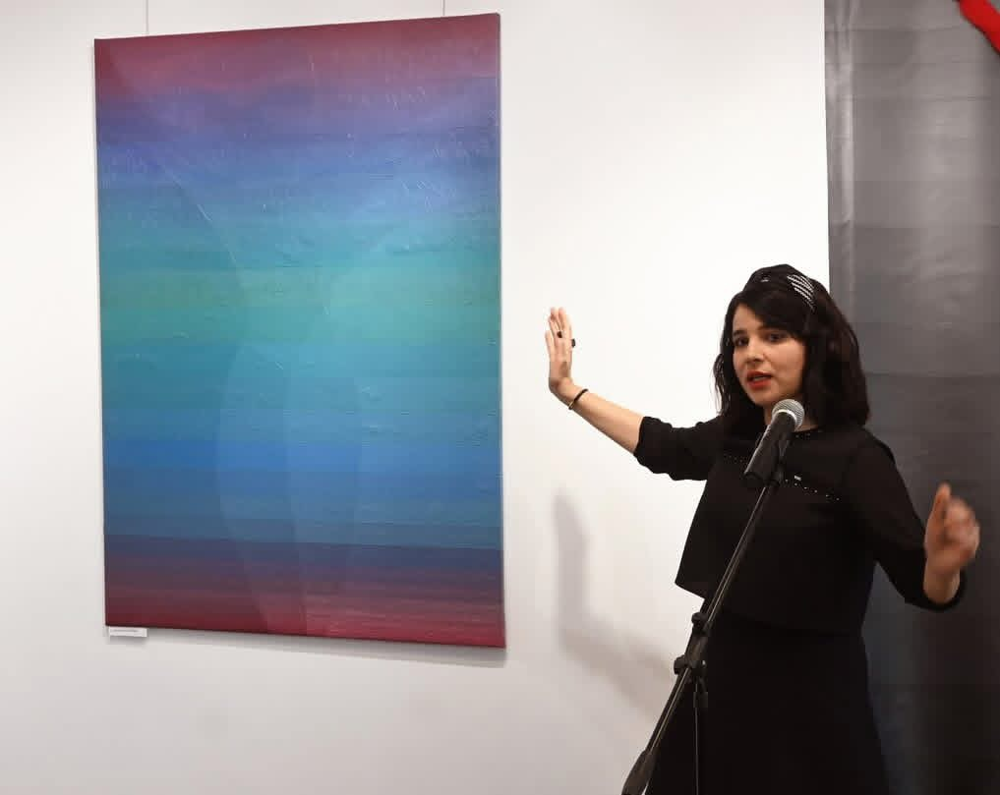
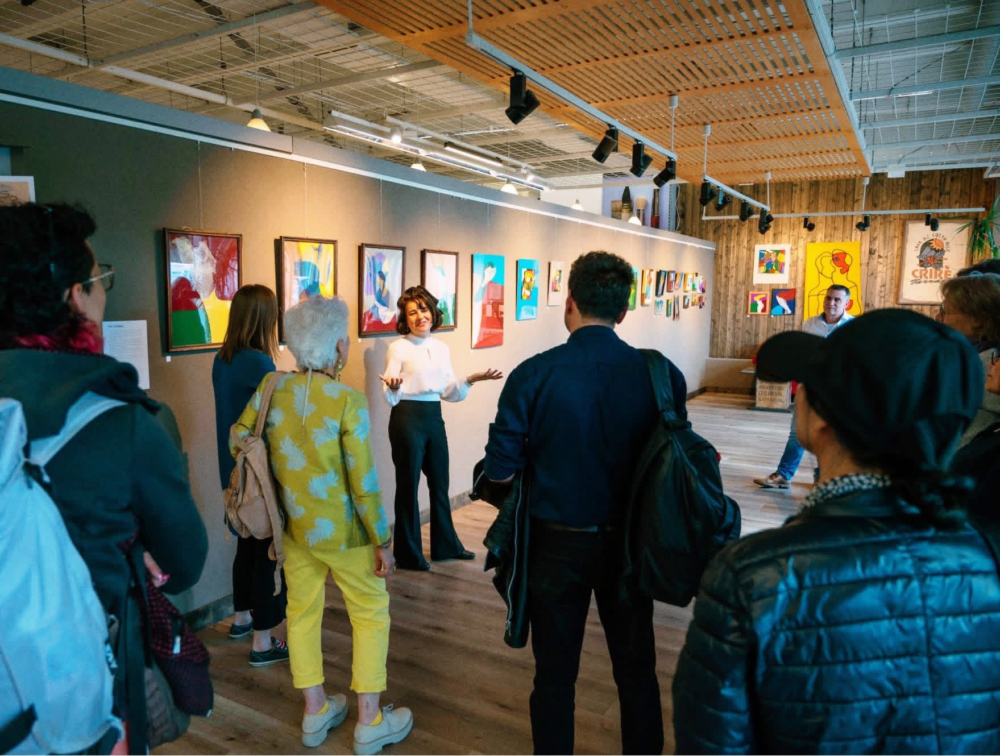
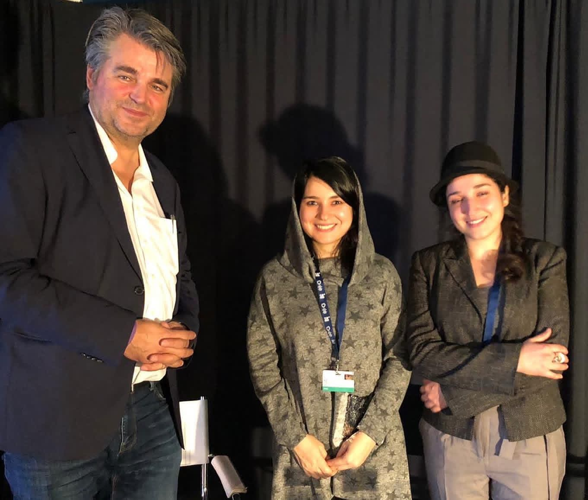
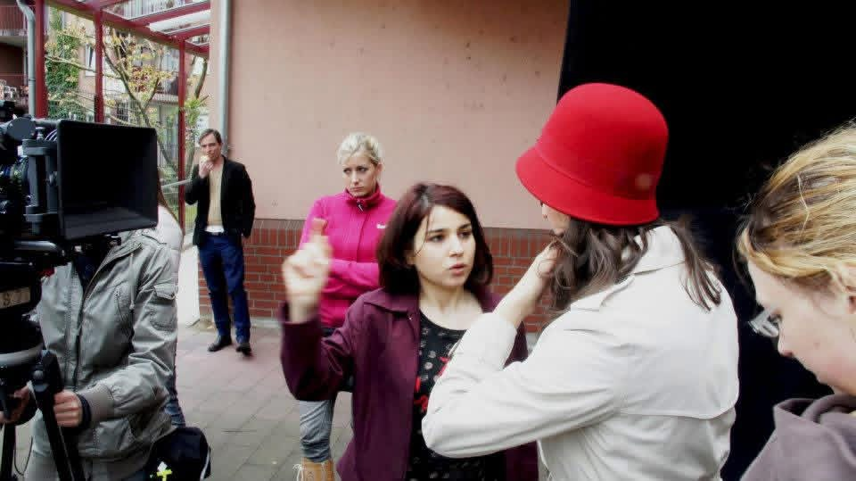
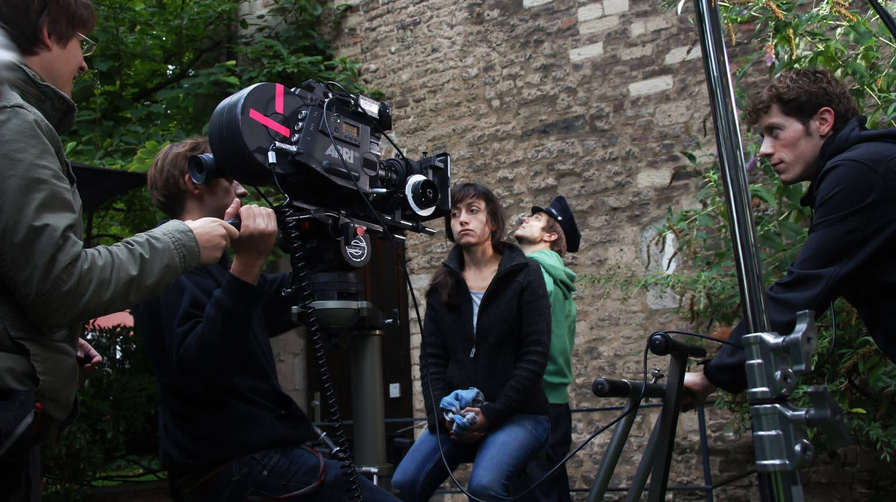

LALEH BARZEGAR
About the artist
Images as places of memory and translation.
Laleh Barzegar is a multidisciplinary artist whose practice moves between painting and film. Her work examines how personal and inherited memories inhabit landscapes, objects, and everyday gestures.
Working through layers, erasure, and repetition, she creates images that remain deliberately open: places where recognition and uncertainty can coexist. Her paintings build tactile surfaces from pigment, oil, wax, and graphite, while her moving-image works extend these concerns through duration, voice, and silence.


Artist statement
Between places, generations, and forms of belonging.
Across both media, Barzegar approaches the image as a site of translation—between places, generations, and forms of belonging.



Moving image
Film / Trailer
Video forthcoming